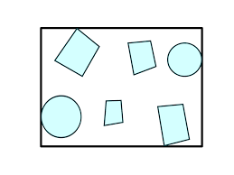

Geometry and Transformations
1.5 Bounding Boxes
A bounding box describes the extent of some region of space. Bounding boxes will be useful for our renderer, because if we divide a space into bounding boxes we can make early decisions about whether calculations need to be done in a particular area (so if you imagine we have 10 complex objects in a box, we can first check if a calculation need sto be done for the box at all, and avoid it if not).

Fig 1.1: A bounding box around a set of objects in two dimensions
We can represent a bounding box in terms of it's min and max bounds, which are points in space. Here are what the structs look like:
#![allow(unused)] fn main() { pub struct Bounds2d<T> { pub min: Point2d<T>, pub max: Point2d<T>, } pub struct Bounds3d<T> { pub min: Point3d<T>, pub max: Point3d<T>, } }
The impl blocks for the Bounds structs provide a constructor which automatically selects the min and max points from the two arguments, as well as a default method that setting the extent to an invalid configuration, which violates the invariant that pMin.x <= pMax.x. This allows operations involving empty boxes e.g., Union() to return the correct result (otherwise they would contain everything and always be true). I've also included a new_from_point method for returning a box from a single point.
#![allow(unused)] fn main() { impl<T: Scalar> Bounds3d<T> { pub fn new(p1: Point3d<T>, p2: Point3d<T>) -> Self { let min = Point3d::<T>::new( p1.x.min(p2.x), p1.y.min(p2.y), p1.z.min(p2.z) ); let max = Point3d::<T>::new( p1.x.max(p2.x), p1.y.max(p2.y), p1.z.max(p2.z) ); Bounds3d { min, max } } pub fn new_from_point(p: Point3d<T>) -> Self { Bounds3d { min: p, max: p } } pub fn default() -> Self { Bounds3d { min: Point3d{x: T::inf(), y: T::inf(), z: T::inf()}, max: Point3d{x: -T::inf(), y: -T::inf(), z: -T::inf()} } } } }
The c++ pbrt implementation also has an overloaded 'Union' method for adding both points and other boxes to boxes. We can achieve this in rust with traits as follows:
#![allow(unused)] fn main() { trait Union<T> { fn union(&self, other: &T) -> Self; } impl<T: Scalar> Union<Point2d<T>> for Bounds2d<T> { fn union(&self, other: &Point2d<T>) -> Self { Bounds2d { min: Point2d { x: self.min.x.min(other.x), y: self.min.y.min(other.y) }, max: Point2d { x: self.max.x.max(other.x), y: self.max.y.max(other.y) } } } } impl<T: Scalar> Union<Bounds2d<T>> for Bounds2d<T> { fn union(&self, other: &Bounds2d<T>) -> Self { Bounds2d { min: Point2d { x: self.min.x.min(other.min.x), y: self.min.y.min(other.min.y) }, max: Point2d { x: self.max.x.max(other.max.x), y: self.max.y.max(other.max.y) } } } } }
This lets us call union() with either a Point or another Bounds, and have the compiler choose the correct method.